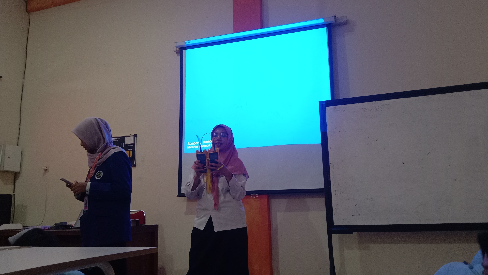

Kabel FO (Fiber Optic) adalah kabel jaringan yang menggunakan serat kaca atau plastik untuk mengirimkan data dengan kecepatan tinggi melalui cahaya.
Bayangkan sebuah dunia di mana kecepatan internet tidak lagi menjadi masalah. Fiber Optic adalah teknologi yang memungkinkan internet berkecepatan super tinggi, dan kamu bisa belajar cara membuat kabel FO ini sendiri!
Di sini, kalian akan mengenal berbagai teknik untuk membuat kabel FO, seperti Fast Connector untuk sambungan instan dan Splicing untuk sambungan permanen dengan kualitas terbaik.
Dalam kabel fiber optic, yang diukur bukan tegangan listrik, tapi daya optik (optical power) yang diukur dengan satuan dBm (decibel-milliwatts) menggunakan alat bernama Optical Power Meter.
Nilai yang dianggap baik/stabil untuk kabel FO:
Berikut dokumentasi hasil praktikum Siswi SMKN 10 MALANG (XI TKJ 2):
Keterampilan ini sangat dibutuhkan dalam dunia telekomunikasi dan perusahaan penyedia layanan internet yang ingin menghadirkan koneksi cepat dan stabil.